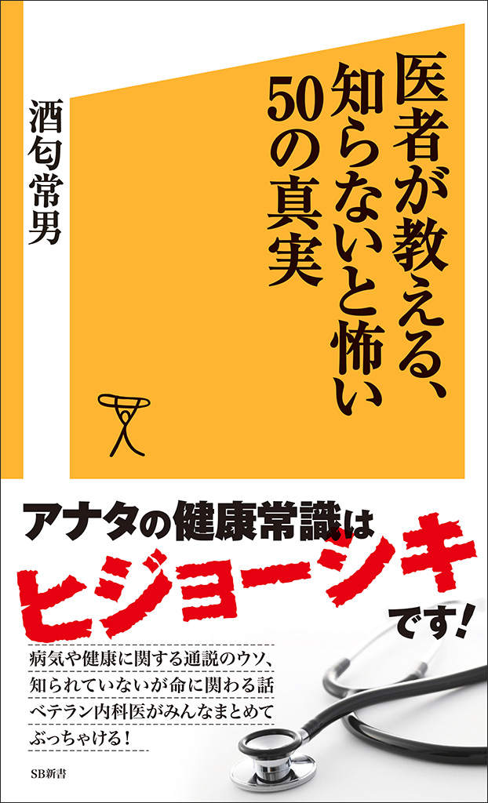
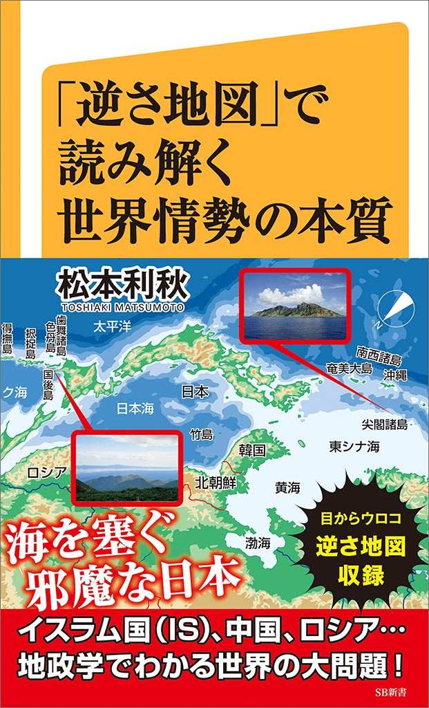
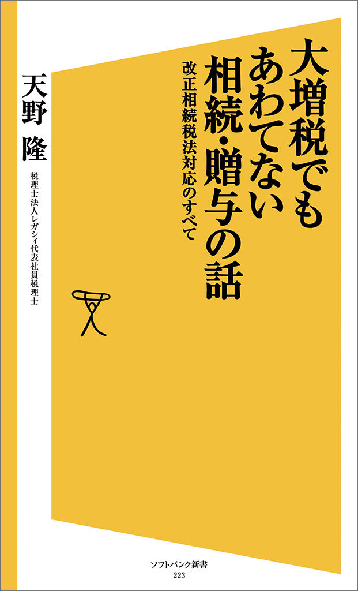

| SB新書 電子版目録 ［Until November 2015］ | |
| SBクリエイティブ | |
| SBクリエイティブ株式会社 (2015) | |
本書に掲載されているコンテンツの著作権は、著作権法により保護されています。
これらについて、著作権法で認められるもの、規約等により許諾が明示されているものを除き権利者に無断で転載・複製・翻訳・販売・貸与・印刷・データ配信（Ｗｅｂページへの転載など送信可能化を含む）・改ざん等する行為は、固く禁じられています。
はじめに
SB新書は、2006年に好奇心の扉を開け！のキーワードと共に誕生し、以降、ビジネス・自己啓発・健康・スポーツ・IT関連など幅広いジャンルにわたり、2015年11月現在までに通算317タイトルを刊行しました。
本目録では、そのうち、スマートフォン、パソコン等で閲覧可能な形式で電子版をご提供している195タイトル（2011年以降の出版物が中心）についてご紹介しています。目録内では、ジャンル別・出版日（紙）順を基本構成としました。新書というメディアの性格（役割）のひとつに、その時々に話題となっているテーマについて、最新情報をもとに全体像を整理・解説しお伝えしていくという側面がありますので、順番にページをおくっていくだけでも各分野における「時代の流れ」が見えてきます。また、その中でも「時を経ても全く色褪せない提言」や、「今からでも知りたい・理解しておきたいテーマ」が数多くあることがご確認頂けると思います。さらに、デジタルの特性を活かし、タイトルや著者名からも検索しやすいよう、それぞれの目次を設けました。皆さまの"好奇心""向上心"に響く、あるいは"悩み解消"に役立つ一冊が見つかる一助となれば大変幸いです。
そしてこの度、SB新書は2015年12月にリニューアル、再出発致します。
より、時代・次代のニーズに応え、かつ熱のこもったコンテンツのご提供を目指すと同時に
【印刷版・電子版完全同時発売】
を実現致します。
新装刊SB新書、最初の配信は、2015年12月4日です。
こちら にて、今後2016年3月までの刊行（配信）タイトルをご案内しています。ますますパワーアップするSB新書の今後にどうぞご注目、ご期待ください。
2015年11月吉日
SBクリエイティブ 電子出版開発室
※注：各タイトルの紹介文は、出版時の情報をもとにしています。また、ジャンル区分は本目録独自のものであり、配信ストアのそれとは必ずしも一致しません。
※注2：各紹介文最後の［購入はこちら］にてリンク機能を設定しておりますが、KindleのiOSアプリに於いては当機能が現時点（2015年11月時点）でサポートされていないことが確認されております。予めご了承ください。
タイトル50音順（目次）
あ行
ウエスト20cm減、体重15kg減！ミトコンドリア・ダイエット
か行
クイズでマスター！使える英会話750フレーズ【音声DL付き】
さ行
「３時間切り請負人」が教える！ マラソン<目標タイム必達>の極意
3時間でマスター！新TOEICテストの英会話【音声DL付き】
3時間でマスター！新TOEICテストの英単語【音声DL付き】
3時間でマスター！新TOEICテストの英熟語【音声DL付き】
3時間でマスター！新TOEICテストの英文法【音声DL付き】
た行
「宝くじは、有楽町チャンスセンター1番窓口で買え！」は本当か？
炭水化物を食べながらやせられる！地中海式 世界最強の健康ダイエット
転職したり、フリーランスだったり、離婚を経験した人は知らないと損する、年金の話
とっさの一言！耳から覚える英会話2000フレーズ【音声DL付き】
な行
は行
腹いっぱい肉を食べて1週間5kg減！ケトジェニック・ダイエット
ま行
や行
「弱虫」でも強くなる！ ひとつ上のロードバイク＜プロ技＞メソッド
ら行
著者・監修者名50音順（目次）
あ行
秋山 進
麻倉 怜士
安部 徹也
天野 隆
荒井 好一
飯尾 洋一
井齋 偉矢
石原 結實
井上 健二
岩崎 元郎
岩本 能史
ウジ トモコ
氏家 健治
牛山 隆信
海猫沢 めろん
江部 康二
遠藤 友則
オーガスト・ハーゲスハイマー
大村 大次郎
大山 くまお
小川 浩
奥野 哲治
奥村 幸治
おち まさと
鬼塚 眞子
小野 俊哉
帯津 良一
か行
海童 暖
鴨下 一郎
河合 敦
川井 拓也
菊原 智明
北嶋 廣敏
木村 尚義
木村 穣
工藤 一彦
小池 直己
クイズでマスター！使える英会話750フレーズ【音声DL付き】
3時間でマスター！新TOEICテストの英会話【音声DL付き】
3時間でマスター！新TOEICテストの英単語【音声DL付き】
3時間でマスター！新TOEICテストの英熟語【音声DL付き】
3時間でマスター！新TOEICテストの英文法【音声DL付き】
とっさの一言！耳から覚える英会話2000フレーズ【音声DL付き】
小池 弘人
河本 泰信
小谷 寿美子
こばやし ただあき
小松 易
さ行
齋藤 訓之
齋藤 孝
齋藤 剛康
斎藤 糧三
腹いっぱい肉を食べて1週間5kg減！ケトジェニック・ダイエット
境 真良
榊原 英資
酒匂 常男
佐々木 由樹
定松 勝幸
佐藤 眞一
佐藤 誠司
クイズでマスター！使える英会話750フレーズ【音声DL付き】
佐藤 留美
沢田 健太
清水 克彦
自由酒場倶楽部
白方 健一
白澤 卓二
白濱 龍太郎
新谷 弘実
杉山 勝彦
鈴木 清和
鈴木 光司
砂田 貴裕
た行
高木 芳紀
高沢 謙二
高橋 弘
高橋 広嗣
滝沢 弘康
武市 悦宏
武田 知弘
立花 龍司
田中 猛雄
多根 清史
田部井 文雄
塚越 健司
土橋 重隆
坪田 聡
DHC
デイビッド・セイン
出口 汪
寺尾 幸紘
徳本 昌大
戸高 一成
な行
内藤 久
内藤 眞禮生
ウエスト20cm減、体重15kg減！ミトコンドリア・ダイエット
内藤 誼人
長尾 和宏
長尾 義弘
長岡 隆志
永田 孝行
中野 明
中野 ジェームズ 修一
中野 雅至
中丸 満
中村 繁夫
中村 昌広
中森 勇人
南雲 吉則
並木 浩一
新見 正則
西 加南子
西内 啓
西本 裕隆
日本エクストリーム出社協会
猫 ひろし
野澤 伸吾
は行
萩原 岳
萩原 さちこ
橋本 大也
長谷川 慶太郎
浜田 裕也
転職したり、フリーランスだったり、離婚を経験した人は知らないと損する、年金の話
林 信行
林 恭弘
疋田 智
福澤 潔
「３時間切り請負人」が教える！ マラソン<目標タイム必達>の極意
福原 正大
富家 孝
藤田 紘一郎
二木 謙一
辨野 義己
本田 秀夫
本間 龍介
本間 良子
ま行
前川 修満
前島 賢
牧田 善二
増田 悦佐
増田 晶文
松生 恒夫
松下 信武
松原 英多
松原 直美
松本 翔
松本 利秋
松山 淳
溝口 優司
三井 弘
美波 紀子
嶺 興嶽
村井 雅清
村松 尚登
百枝 義雄
森本 貴義
や行
柳生耕一平厳信
八代 嘉美
山岡 淳一郎
山口 真由
山崎 世美子
山崎 敏正
「弱虫」でも強くなる！ ひとつ上のロードバイク＜プロ技＞メソッド
山嶋 哲盛
山田 順
山田 吉彦
山本 御稔
「宝くじは、有楽町チャンスセンター1番窓口で買え！」は本当か？
山脇 伸介
八幡 和郎
横石 知二
横川 由理
横山 淳一
炭水化物を食べながらやせられる！地中海式 世界最強の健康ダイエット
吉岡 俊介
吉岡 利貢
吉田 友和
吉田 類
米井 嘉一
米山 公啓
わ行
若原 正己
和田 秀樹
＜医学・薬学・健康 01/40＞
認知症 「不可解な行動」には理由がある
佐藤 眞一
出版（紙）日 2012/8/16
【内容紹介】
高齢者社会の日本では、もはや認知症は特別なものではなく、ごく当たり前のものとなっている。誰もが自身が認知症になったり、認知症を介護する人になる可能性があるのだ。「認知症の人は、なぜ、あのような行動をとるのだろうか？」「介護する人は、どのように行動すればよいのだろうか？」──こうした疑問に答えるために、認知症の人と介護する人の心と行動を、豊富な事例をもとに、心理学・人間行動学の観点から読み解いていく。
＜医学・薬学・健康 02/40＞
自閉症スペクトラム
10人に1人が抱える「生きづらさ」の正体
本田 秀夫
出版（紙）日 2013/3/15
【内容紹介】
「自閉症スペクトラム」は他人事ではない！ 自閉症とアスペルガー症候群、さらには障害と非障害の間の垣根をも取り払い、従来の発達障害の概念を覆す「自閉症スペクトラム」の考え方が注目されています。10人に１人が抱える「生きづらさ」の原因を解明し、療育、支援のあり方まで、多角的に解説します。
＜医学・薬学・健康 03/40＞
医者が教える、知らないと怖い50の真実
酒匂 常男
出版（紙）日 2014/3/14

【内容紹介】
医者だけが知っている"常識"の"非常識"。ドクター生活30年のベテラン内科医が赤裸々に語る、病気や健康に関する常識のウソ、軽視されがちだが命に関わるほどヤバいこと、効き目があると思っているが全くのデタラメなこと、病院社会や医療業界の内幕、医者の本音など、目からウロコが落ちまくる一冊！
＜医学・薬学・健康 04/40＞
50歳を過ぎても身体が10歳若返る筋トレ
こうすれば愉しく無理せずに続けられる
増田 晶文
出版（紙）日 2014/5/15
【内容紹介】
きれいな姿勢、前向きな気持ちが手に入る！ 50代ミドル以降は筋肉への投資がシルバーエイジを左右する。筋肉を刺激し、鍛えれば老化は抑制できる！ 健康とカッコいい体形が同時に手に入る！ 50歳を過ぎても、驚異の体形、体脂肪率を維持する作家が語る、トレーニングの工夫とメソッド！
＜医学・薬学・健康 05/40＞
西洋医が教える、本当は速効で治る漢方
井齋 偉矢
出版（紙）日 2014/5/15
【内容紹介】
漢方薬は、速効性のある科学的な薬だった！ 東洋思想に縛られず、西洋薬と同じように処方するのが「サイエンス漢方」のキモ！ 西洋薬と同じように症状によって合理的に処方する独自の方式が、従来の漢方の概念を覆す。西洋医学が難渋する疾患を抱える人にも、すみやかに解決できる道筋を提起する。
＜医学・薬学・健康 06/40＞
病気になる人、ならない人
その見逃せない法則
土橋 重隆
出版（紙）日 2007/8/15
【内容紹介】
病気にならないための心の習慣とは？ 日本の内視鏡・腹腔鏡下手術の第一人者として活躍してきた外科医が、患者と真剣に向き合う中でたどり着いた結論、「病気にならない生き方、心のあり方」を紹介。
＜医学・薬学・健康 07/40＞
脳がどんどん若返る生活習慣
米山 公啓
出版（紙）日 2008/8/12
【内容紹介】
「人の名前がすぐ出て来ない...」「さっき考えていたことが思い出せない...」など、年齢とともに脳の衰えを感じてませんか？ がんばらなくても脳活性できる方法を医学博士が脳科学の裏付けとともに具体的に伝授します。
＜医学・薬学・健康 08/40＞
体が若返る10の生活習慣
中野 ジェームズ 修一
出版（紙）日 2008/12/9
【内容紹介】
37歳で現役復帰、国際大会で優勝したプロテニスプレイヤー・クルム伊達公子さんの復活劇を陰で支えた人気トレーナーが、何歳からでも、無理なく、楽しみながら体を若返らすことができるプロのメソッドを教えます。
＜医学・薬学・健康 09/40＞
健康常識にダマされるな！
誰も教えてくれなかった「通説」のウソ・ホント
井上 健二／工藤 一彦
出版（紙）日 2010/11/15
【内容紹介】
「スッポンはお肌に良い」は大ウソ！？ 健康情報誌のライターとして、20年以上に渡り最先端の情報を取材してきた著者が、豊富な経験と知識をベースに健康情報のウソとホントをすっきり整理整頓、真実と生活習慣の改善法を指南。
＜医学・薬学・健康 10/40＞
血糖値は3日で下がる！
今すぐできる「糖尿病」劇的改善プログラム
佐々木 由樹
出版（紙）日 2011/3/16
【内容紹介】
糖尿病を克服するいちばん簡単な方法！ 厳しい糖質制限やカロリー計算は無し！ お米もパスタもお肉もOK。まずは3日間、本書で紹介する血糖値改善プログラムを実践し、血糖値が実際に下がることを体験してください。
＜医学・薬学・健康 11/40＞
急激なストレスからお腹を守る腸内リセット術
松生 恒夫
出版（紙）日 2011/7/16
【内容紹介】
ストレスから逃れるのが大変難しい現代、急激なストレス反応といえる胃腸症状（腹痛や下痢、食欲不振、嘔吐など）に対して、３万人を診てきた大腸内視鏡検査の名医が、腸を守るノウハウを徹底伝授！
＜医学・薬学・健康 12/40＞
ガンにならない3つの食習慣
ファイトケミカルで健康になる！
高橋 弘
出版（紙）日 2011/8/17
【内容紹介】
ガンの専門医がガンにならないシンプルな方法を全公開。なかでも大切なのは、野菜や果物に含まれる「ファイトケミカル」を上手に摂ること。その具体的な、誰でも今日から実践できるノウハウを徹底的に公開します。
＜医学・薬学・健康 13/40＞
眠れない人がぐっすり眠れる本
あなたの睡眠が劇的に改善！Dr.鴨下式超快眠法
鴨下 一郎
出版（紙）日 2012/1/16
【内容紹介】
朝起きられない、寝た気がしない...。日本人のおよそ8割は自分の睡眠に不満を感じており、時間は先進諸国でも短い部類。眠りはビジネス同様、戦術が大切。本書は不眠をタイプ分けし、それぞれに適した快眠術を紹介。
＜医学・薬学・健康 14/40＞
ヒザ・腰・肩の痛みは自分で消せる！
体がラクになる簡単エクササイズ
中野 ジェームズ 修一
出版（紙）日 2012/2/15
【内容紹介】
ヒザ・腰・肩の痛みの背景には、運動不足による筋力と柔軟性の低下が隠れていることが多くあります。これには日常的にできる無理せず頑張らない簡単な運動が効果的です。丁寧にメソッドを解説した痛み解消の決定版。
＜医学・薬学・健康 15/40＞
なまけ者でも無理なく続く77の健康習慣
米井 嘉一
出版（紙）日 2012/3/15
【内容紹介】
「カラダに一番良いこと」は続かない、自分が不健康な生活を送っていることは百も承知。わかっちゃいるけどできない／やめられないことが問題なのだ。できない健康法は捨てて、もっと気軽に続けられる方法を紹介！
＜医学・薬学・健康 16/40＞
老けたくないなら「ＡＧＥ」を減らしなさい
カラダが糖化しない賢い生活術
牧田 善二
出版（紙）日 2012/5/15
【内容紹介】
肌のシミ・シワ、白内障、がん、糖尿病、骨粗鬆症、動脈硬化、アルツハイマー病。AGEは老化を招く人類最大の敵！ AGEはどうすれば避けられるのか...AGEの専門医が「老いない」ノウハウを指南する。
＜医学・薬学・健康 17/40＞
「やわらかい血管」で病気にならない
血管博士が教える体の中からよみがえる方法
高沢 謙二
出版（紙）日 2012/9/14
【内容紹介】
「サイレント・キラー」（静かな殺し屋）といわれる血管事故は自覚症状がほとんどなくある日突然襲ってくる。血管をやわらかく、血液をサラサラに。本書を読んで血管年齢を若返らせ、体の内側からよみがえろう。
＜医学・薬学・健康 18/40＞
「空腹で歩く」と病気にならない
石原 結實
出版（紙）日 2012/10/15
【内容紹介】
「空腹ウォーキング」──空腹で下半身を鍛える、たったそれだけで病気予防に絶大な効果が！ 少食健康ブームの火付け役であり元祖でもある、医学博士・石原結實氏が唱える健康習慣の決定版。
＜医学・薬学・健康 19/40＞
血管からがんを治す カテーテル治療の挑戦
奥野 哲治
出版（紙）日 2013/2/15
【内容紹介】
カテーテルを使った血管内治療の第一人者・奥野哲治医師。多くのがん患者と向き合ってきた、最前線からのレポート！ 同治療の役割、そこに至る道のりや今後の課題...あきらめないがん治療のあり方がここに示される。
＜医学・薬学・健康 20/40＞
「コリと痛み」を消せばあなたは100歳まで生きられる
松原 英多
出版（紙）日 2013/7/16
【内容紹介】
「肩こり・腰痛」で人は死ぬの！？「思いッきりテレビ」のホームドクターを始め、マスコミに引っ張りだこのカリスマ医師・松原英多医学博士が明かす、放っておくと恐い「プチ疼痛症候群」とその対処法のすべて。
＜医学・薬学・健康 21/40＞
長生きしたけりゃデブがいい
世界的研究が証明する医学の真実
新見 正則
出版（紙）日 2013/11/15
【内容紹介】
健康長寿のマッスルデブを目指せ！ 2013年アメリカの医学誌に発表されたレポートが話題を呼んだ。イグ・ノーベル賞を受賞した著者が「デブ＝悪」ではないということについて、数々の科学的根拠をもとに徹底解説。
＜医学・薬学・健康 22/40＞
「20秒」でねこ背を治す
長岡 隆志
出版（紙）日 2013/11/15
【内容紹介】
ねこ背は必ず治せる。良い姿勢のイメージを頭で正しく理解し、本書で紹介する基本的なエクササイズの中から試しやすいものを拾い読みするだけで劇的に姿勢はよくなる。読んで試して、すぐ成果が出るシンプル実用書。
＜医学・薬学・健康 23/40＞
うつを鍼灸で治す
齋藤 剛康
出版（紙）日 2013/12/16
【内容紹介】
東洋医学がうつに悩む現代人を救う！ 鍼灸は、うつ病、気分障害、自律神経失調症など、心の疾患にも効果があり、実はWHOでも認められていることなのだ。心の不調に悩む現代人に向けて、鍼灸を用いた治療法を紹介。
＜医学・薬学・健康 24/40＞
腸をダマせば身体はよくなる
辨野 義己
出版（紙）日 2014/1/15
【内容紹介】
腸との騙し合いが健康への近道！「うんち博士」として腸や便の研究で知られる著者が、腸の賢さをよく知ることで、俗説や間違った常識を排し、腸と上手に付き合っていく習慣を明快に解説していく。
＜医学・薬学・健康 25/40＞
9割の不眠は「夕方」の習慣で治る
白濱 龍太郎
出版（紙）日 2014/2/14
【内容紹介】
寝付きの悪い人に朗報！ 多忙でストレスを抱えがちなビジネスパーソンの現実に適した、夕方以降（終業後、帰宅後）のちょっとした習慣で入眠を誘い、翌朝スッキリ起きられる「白濱式・48の睡眠メソッド」。
＜医学・薬学・健康 26/40＞
医者と薬を遠ざける「ふくらはぎ」習慣
縮退で考える健康・社会・生き方
小池 弘人
出版（紙）日 2014/6/16
【内容紹介】
生命力を呼び覚ますスイッチ！ 第２の心臓として注目の部位「ふくらはぎ」。健康や長生きにつなげていく習慣を紹介するほか、「ふくらはぎ習慣」が身体にいい本当の理由を、統合医療専門医の立場から解き明かす。
＜医学・薬学・健康 27/40＞
「いい人」をやめると病気にならない
帯津 良一
出版（紙）日 2014/8/12
【内容紹介】
働きすぎない、夜ふかししない、悩みすぎない...。笑い、よく食べ、とことん遊ぶ！！ ストレスを減らし、免疫力を高めることが寿命をのばす。「ホリスティック医療」の世界的権威が、「いい人」をやめていつまでも健康でいられる秘訣を伝授。
＜医学・薬学・健康 28/40＞
腸が嫌がる食べ物、喜ぶ食べ物
40歳を過ぎたら知りたい、病気にならない食習慣
松生 恒夫
出版（紙）日 2014/10/15
【内容紹介】
これを食べておけば心配ない！ 腸にいいものはコレだ！ え！？ ヨーグルトも実はよくない？ 目からウロコの腸の新常識！腸（チョー）意外な新発見があること間違いなし。
＜医学・薬学・健康 29/40＞
「うつ？」と思ったら副腎疲労を疑いなさい
9割の医者が知らないストレス社会の新病
本間 龍介／本間 良子
出版（紙）日 2014/11/14
【内容紹介】
なかなか取れないその疲れ、うつっぽい症状は、「副腎」のせいだった！ 日本の医者の9割が知らない「副腎疲労」（アドレナル・ファティーグ）。知られざるストレス社会の新病への対処法を第一人者が紹介。
＜医学・薬学・健康 30/40＞
西洋医がすすめる、カラダが瞬時によみがえるサイエンス漢方
井齋 偉矢
出版（紙）日 2014/12/15
【内容紹介】
「ダル重っ」が瞬時に治る！ 漢方の速効性を説いた好評前著『西洋医が教える、本当は速効で治る漢方』 の第二弾！「生きる力を引き上げる」「疲れを速効でとる」など漢方にしかできない、漢方の得意分野を存分に紹介。
＜医学・薬学・健康 31/40＞
体の不調は「首こり」から治す、が正しい
三井 弘
出版（紙）日 2015/1/15
【内容紹介】
「スマホ猫背」も要注意！ 「首こり」は、ただ痛みや不調をもたらすだけでなく下手をすればうつや突然死の原因になる可能性も。放っておくと怖い「首こり」を知り、いかに向き合い解消するか「首」の第一人者が解説！
＜医学・薬学・健康 32/40＞
寝たきりにならず、自宅で「平穏死」
健康寿命を延ばすために大切なこと
長尾 和宏
出版（紙）日 2015/1/15
【内容紹介】
日本人の平均寿命は、男女とも80歳を超えるが、健康寿命はそれぞれ10歳ほど下がってしまう。この事実から目をそらさず、正しい「健康寿命」の延ばし方を解説！ 本気でピンピンコロリを願う人に必須の知恵を伝授する。
＜医学・薬学・健康 33/40＞
脳が突然冴えだす「瞬間」仮眠
坪田 聡
出版（紙）日 2015/2/16
【内容紹介】
NASAも認めるスゴイ効果。昼間の眠気に悩む日々多忙なビジネスパーソンに適した、たんに疲労をとるだけでなく、脳を休ませることで逆に午後の能率を高めていく瞬間仮眠（パワーナップ）習慣のススメ！
＜医学・薬学・健康 34/40＞
その薬があなたを殺す！
薬剤師が教える"知らないと毒になる"薬の話
小谷 寿美子
出版（紙）日 2015/3/16
【内容紹介】
いつもの薬も飲み方を間違えれば、毒になる。身近でありながら間違えると恐い「薬」の正しい扱い方を、現役薬剤師が個々の薬の名称も出しながら紹介します。
＜医学・薬学・健康 35/40＞
病気を防ぐ「腸」の時間割
老化は夜つくられる
藤田 紘一郎
出版（紙）日 2015/4/15
【内容紹介】
「腸」などの臓器にも時間がある！ 生活リズムと腸の関係を知り、腸年齢を若返らせることが老化を防ぐ第一歩！ 健康寿命を左右する朝の腸。腸内研究の第一人者である著者実践済の「腸から健康になる方法」を紹介。
＜医学・薬学・健康 36/40＞
「ギャンブル依存症」からの脱出
薬なしで8割治る"欲望充足メソッド"
河本 泰信
出版（紙）日 2015/8/11
【内容紹介】
もう大丈夫！ ギャンブル依存症を治す。自分自身がアルコール依存症を克服したことをきっかけに、オリジナルの画期的なメソッドで数多くの患者の治療に成功してきた著者が、数々の壮絶な実態とその解決法を説く。
＜医学・薬学・健康 37/40＞
サラダ油をやめれば認知症にならない
山嶋 哲盛
出版（紙）日 2015/8/11
【内容紹介】
著者はアルツハイマー病のメカニズムを解明し、国際的にも注目を集めている脳科学専門医。原因物質は「サラダ油」に含まれていた！ 本書では、臨床でも絶大な効果をあげる、脱「サラダ油」生活を伝授。
＜医学・薬学・健康 38/40＞
体を壊す食品「ゼロ」表示の罠
永田 孝行
出版（紙）日 2015/8/11
【内容紹介】
グルメリポーター・タレント、菊田あや子氏推薦！ カロリーゼロは余計太る！ 食品表示法対応、食品表示へのリテラシーが高まるなか、意外と見落としがちな「ゼロ」表示や「非」表示の裏側や実態を知り、家族の健康にいかしていく一冊。
＜医学・薬学・健康 39/40＞
認知症がイヤなら「腸」を鍛えなさい
新谷 弘実
出版（紙）日 2015/10/15
【内容紹介】
ボケない人は腸が一生若い！ ミリオンセラー『病気にならない生き方』のDr.新谷が教える100歳まで「腸」を司る習慣。認知症時代に必読の健康書。
＜医学・薬学・健康 40/40＞
だから医者は薬を飲まない
和田 秀樹
出版（紙）日 2015/11/16
【内容紹介】
「薬漬け医療」の裏側で、薬を飲まない医者の存在がある。本書は「薬は毒」以前に、医者が薬を飲まない"本当の理由"を探り、日本の医療の実態を明かすことで、患者にとって大切なこと（ぜひ知ってもらいたいこと）を語る。
＜ダイエット 01/08＞
腹いっぱい食べて楽々痩せる「満腹ダイエット」
肉を食べても酒を飲んでも運動しなくても確実に痩せる！
江部 康二
出版（紙）日 2011/6/15
【内容紹介】
肉も酒もOK！ 運動なしで楽々痩せる。
食事での糖質をなるべく減らす「糖質制限食」。糖質を減らせば、肉料理や揚げ物、炒め物も好きなだけ食べながら確実に痩せられる。カロリー計算や運動も必要ない、よいことずくめのダイエット法ですが、糖質制限食はもともととても効果の高い糖尿病の健康的な治療食で、体重減少効果にきちんとした医学的な裏づけがあります。著者自身も半年で10キロの減量に成功したそのノウハウを徹底公開！
＜ダイエット 02/08＞
20歳若く見える人の食べ方
老けない、太らない、疲れないオーガスト流フードヒーリング
オーガスト・ハーゲスハイマー
出版（紙）日 2012/12/14
【内容紹介】
歳を重ねるごとに老けて、太って、疲れて......エネルギッシュに動けなくなるのは、食べものが大きな原因。ヒーリング効果を持つ食べ物を摂るようにすれば、あなたも「老けない、太らない、疲れない」を実現することができます。フードヒーリングによるアンチエイジングは、男女問わず何歳からスタートしても誰にでも大きな効果を発揮します。栄養科学博士でもある著者が、およそ30年にわたって研究し自ら実証してきた食のノウハウを余すところなく公開！
＜ダイエット 03/08＞
Dr.ナグモの7日間若返りダイエット
20歳若返り、15kg痩せる！
南雲 吉則
出版（紙）日 2012/4/16
【内容紹介】
がんばらない、無理しない、簡単ダイエット。老け顔で典型的なメタボ体型が...。"あること"を実践し、体重が激減！ その後、約20年にわたり、適正体重をキープし続け、見た目も若返った。その驚異の若返り＆ダイエット法とは！？
＜ダイエット 04/08＞
ウエスト20cm減、体重15kg減！ミトコンドリア・ダイエット
医師が自ら実証した健康痩身メソッド
内藤 眞禮生
出版（紙）日 2012/8/16
【内容紹介】
ウエスト20cm減、体重15kg減――ミトコンドリアの大きな役目は、食べ物から摂った栄養素をエネルギーに変えること。体謝のカギを握る細胞内のミトコンドリアを活性化する、医師自ら実証したメソッドを全公開。
＜ダイエット 05/08＞
腹いっぱい肉を食べて1週間5kg減！ケトジェニック・ダイエット
斎藤 糧三
出版（紙）日 2013/4/15
【内容紹介】
肉を食べて5kg痩せる！？ 予防医学のエキスパートであり、「カラダクリニック」で栄養指導なども手がける斎藤糧三医師が推奨する、これまでの常識を覆すダイエット法、遂に公開！！
＜ダイエット 06/08＞
頑張らなくてもやせられる！メンタルダイエット
名医が教える「一生太らない体質」になるメソッド
木村 穣
出版（紙）日 2013/5/15
【内容紹介】
頑張らない、無理しない、リバウンドしない！ 関西医科大枚方病院（大阪府枚方市）の肥満外来で成果を挙げている、認知行動療法を取り入れた痩身メソッドを本邦初公開！
＜ダイエット 07/08＞
最短で効く！遺伝子タイプ別ダイエット
自分の「遺伝子型」を知れば、痩せられる
白澤 卓二／DHC
出版（紙）日 2014/3/14
【内容紹介】
日本人の肥満に特に影響を与える3種類の遺伝子、「りんご型（β3AR遺伝子）」「洋なし型（UCPI遺伝子）」「バナナ型（β2AR遺伝子）」の体質区分毎に応じた、効果的な痩せ方を徹底指南！
＜ダイエット 08/08＞
炭水化物を食べながらやせられる！地中海式 世界最強の健康ダイエット
横山 淳一
出版（紙）日 2014/6/16
【内容紹介】
ゴハンもパスタも食べて痩せる！ 地中海沿岸は、世界的にみて心臓病や慢性疾患、がんの患者が少ない。ダイエット大国のアメリカで行われた2,697ものダイエットに関する実験で、１番注目されている地中海式食事法を紹介。
＜自己啓発 01/27＞
なぜ勉強するのか？
鈴木 光司
出版（紙）日 2006/12/11
【内容紹介】
『リング』の鈴木光司が説く勉強の本質！「なぜ微分積分を勉強しなければならないの？ 文系に進めば、そんなもの学んだって何の役にも立たないじゃない」と子どもから訊かれて、あなたはどう答えますか。この問いに合理的に答えられれば、勉強に対する子どものモチベーションは飛躍的に上がります。
＜自己啓発 02/27＞
頭がよくなる思考法
齋藤 孝
出版（紙）日 2009/9/9
【内容紹介】
グーグルに淘汰されない知的思考術！ ネット時代で生き残っていくためには、「検索バカ」になることなく、「自分の頭でとことん考える力」が必要です。本書では、「ネット検索をほとんどしない」という斎藤孝氏が、自身の知的生産活動をも支える「骨太の思考術」を紹介。
＜自己啓発 03/27＞
一流の習慣術
イチローとマー君が実践する「自分力」の育て方
奥村 幸治
出版（紙）日 2010/7/15
【内容紹介】
イチローに学んだこと、マー君に教えたこと。かつてイチロー選手の専属打撃投手として寮も食事もグランドも共にし、「イチローの恋人」とまで呼ばれた著者。時を経て、中学硬式野球の指導者となってからは、田中将大投手を育て上げた。日米の第一線で活躍し、確実に結果を出す彼らの原点には、「一流になるための習慣づけ」がある。著者だからこそ知る、その習慣術を公開。
＜自己啓発 04/27＞
一流の指導力
日米プロ野球で実践した「潜在力」の引き出し方
立花 龍司
出版（紙）日 2012/3/15
【内容紹介】
部下やチームのパフォーマンス、子どもたちの運動や学力を向上させたいと思ったら、なによりポジティブな思考法を植えつけることが大切。自分で考えて出した答えには、情熱を傾けて最大限の努力をするもの。日本人初のメジャーリーグのコーチとして活躍した著者が、コーチングの最新の知見を踏まえ、やる気を高めて潜在力を最大限に引き出すメソッドを公開する。スポーツで、仕事で、家庭で、役立つ一冊。
＜自己啓発 05/27＞
一流の逆境力
ACミラン・トレーナーが教える「考える」習慣
遠藤 友則
出版（紙）日 2015/4/15
【内容紹介】
初めて明かされる！ 本田圭佑のレジリエンス。「ACミラン」で16年間、「超一流」とともに仕事をした男が明かす、壁を乗り越える法。●本田圭佑選手は、なぜ不調から、「復活」と呼ばれる結果を出したか ●「試練」を進化のチャンスに変える、超・一流の思考法とは！？●世界のトップ選手は、なぜ本番に強いのか？●人一倍の努力は、はたして結果に結び付くのか？
＜自己啓発 06/27＞
すべてがうまくいく８割行動術
米山 公啓
出版（紙）日 2006/11/15
【内容紹介】
頑張らなくていいんです！ 頑張らないほうがいいんです！ 人間は達成した途端にドーパミンが切れて、その行為を忘れてしまうから。高効率で好結果を生み、さらに「幸せ脳」を活性化させる「実行８割のススメ」。
＜自己啓発 07/27＞
「なまけ心」に効くクスリ
林 恭弘
出版（紙）日 2007/9/14
【内容紹介】
「会社へ行くのが面倒くさく、朝起きられない」などの「なまけ病」をはじめ、「人と関わるのが恐い」など現代人に巣食う「心のクセ」に、プロカウンセラーが心理学的知見を盛り込みながら、Ｑ＆Ａ形式でやさしくアドバイス。
＜自己啓発 08/27＞
名言力
大山 くまお
出版（紙）日 2009/6/9
【内容紹介】
不安な時代を生き抜くための言葉の力！ 芸能界からスポーツやビジネスの世界など多様な分野で活躍した古今東西の人々の言葉から明日への活力と知恵を得よう。
＜自己啓発 09/27＞
一流の思考法
森本 貴義
出版（紙）日 2009/7/9
【内容紹介】
マリナーズや、ＷＢＣ日本代表のトレーナーを務める著者が実践するトレーニング・慣習の中からパフォーマンス発揮メソッドを抽出。イチロー選手をはじめとしたアスリートたちの具体的なエピソードを交えながら解説。
＜自己啓発 10/27＞
こんな男は捨てられる
山崎 世美子
出版（紙）日 2009/11/16
【内容紹介】
日頃の言動や態度、コミュニケーションの不足や浮気など、さまざまな理由で女に捨てられてしまう男たち。そんな男女間のトラブルについて、百戦錬磨の恋愛・離婚カウンセラーが実践的なアドバイスを行う！
＜自己啓発 11/27＞
頭がよくなる図化思考法
齋藤 孝
出版（紙）日 2010/4/15
【内容紹介】
図で考えると、頭の回転は10倍アップする！ 斎藤孝氏の超人的な知的生産力を支える「図化思考の技術」を、「構造的に物事を捉える技術」から「シンプル図の描き方」まで実例を用いてわかりやすく紹介。
＜自己啓発 12/27＞
心が折れそうなビジネスマンが読む本
中森 勇人／吉岡 俊介
出版（紙）日 2010/5/14
【内容紹介】
すぐ効く55のノウハウ。ビジネスマンは常に過大なストレスに晒され、あらゆる職場で「心が折れそうな人」は増加の一途。誰にも相談できずに、一人でもがき苦しんでいるビジネスマンたちに解決策を指南する。
＜自己啓発 13/27＞
凡人が一流になる「ねたみ力」
松下 信武
出版（紙）日 2010/8/16
【内容紹介】
同僚の昇進や成功を見ると、ねたみの感情が沸々と...怒りと恥じらいが入り混じるこの複雑な感情は、使い方によって成功へ導く強力なアイテムとなる。子を持つ親、教育者、コーチ、組織のリーダーなども必読の一冊。
＜自己啓発 14/27＞
一流の人がやる気を高める10の方法
中野 ジェームズ 修一
出版（紙）日 2010/8/17
【内容紹介】
クルム伊達公子選手、福原愛選手のフィジカルトレーナーとして知られる著者。心理学を生かしたフィットネスのパーソナルトレーニング、コーチングメソッドをビジネスに応用。仕事力が高まるノウハウを初公開する。
＜自己啓発 15/27＞
ものすごい言葉
次のリーダーのために
多根 清史
出版（紙）日 2011/2/16
【内容紹介】
明日のリーダーを作るメッセージ！ 話題になったものからあまり知られていないものまで、様々なものすごい言葉。本書は、それらを指導者やリーダー論の観点を軸として読み解く。まさにこれから人の上に立とうとする方に贈る一冊。
＜自己啓発 16/27＞
負けない奥義
柳生新陰流宗家が教える最強の心身術
柳生耕一平厳信
出版（紙）日 2011/5/16
【内容紹介】
昨日の自分に今日は勝つ。４５０年の秘剣が伝える究極の生き方指南。映画『七人の侍』にも描かれている新陰流は、技より心を鍛えることに重きを置く剣術を掲げ、「天下の剣」と恐れられた。その極意をいまに継ぐ秘伝の書を基に、厳しい時代を生き抜く勝負哲学、負けない奥義を指南する。
＜自己啓発 17/27＞
明日から「朝型人間」になる！
リバウンドなし！人生が好転する早起きメソッド
美波 紀子
出版（紙）日 2012/7/13
【内容紹介】
典型的な夜型人間だった著者が試行錯誤して見つけた、とっても簡単な早起きメソッドを紹介。半年で体重12kg減、体脂肪率10％減、風邪やインフルエンザにもかからず、いいことずくめ。学生も社会人も必読です。
＜自己啓発 18/27＞
プロフェッショナルの習慣力
トップアスリートが実践する「ルーティン」の秘密
森本 貴義
出版（紙）日 2013/2/15
【内容紹介】
イチロー選手は打席に入る際、四股やユニフォームの袖をつまむなど実に多くの動作（ルーティン）を取り入れている。一流アスリートの実例を挙げながら、揺るぎない自信を生み、潜在能力を開花させる手法「ルーティン力」を紹介。
＜自己啓発 19/27＞
ウザい相手をサラリとかわす技術
今日から人間関係が必ず上向く！
清水 克彦
出版（紙）日 2013/11/15
【内容紹介】
人間関係に悩んだときの処方箋。人づき合いは距離感が９割！ 苦手な相手ともストレスなく付き合い、人間関係をスムーズにするためのノウハウを大公開！
＜自己啓発 20/27＞
サラリーマンは早朝旅行をしよう！
平日朝からとことん遊ぶ「エクストリーム出社」
日本エクストリーム出社協会
出版（紙）日 2014/1/15
【内容紹介】
「温泉に行きたい」「リフレッシュしたい」...ふと思っても急には休めない、休日は家事で手いっぱい......そうやって、あきらめてはいませんか？ ならば朝、出社前の時間を利用してみては？ 朝をとことん楽しもうという新発想！
＜自己啓発 21/27＞
ずるさで勝る水平思考トレーニング
木村 尚義
出版（紙）日 2014/3/14
【内容紹介】
ある飲食店で100％注文されるそのメニューとは？ ずるさに反撃！ 「なんだ！」「そうか！！」と相手をくやしがらせるクイズ版・逆転の発想法。視野を横に広げることで、常識を覆し、枠にとらわれない考え方を身につけよう。
＜自己啓発 22/27＞
読むだけで人間力が磨かれる、大人の漢文
こんな場面で使いこなしたい！
田部井 文雄
出版（紙）日 2014/3/14
【内容紹介】
「仕事」「人間関係」「自分磨き」さらに「趣味」まで、漢文には人間力を高めるための知恵が詰まっている！ 『論語』『老子』『史記』など、知っていそうで知らない古典とその名言、エッセンスを身につけ、状況に応じて自分に効く座右の銘を手に入れる！
＜自己啓発 23/27＞
超一流の勝負力
マー君とイチローが実践した「自分を超える」思考法
奥村 幸治
出版（紙）日 2014/4/15
【内容紹介】
田中将大投手、イチロー選手、星野仙一監督、世界少年野球大会で３連覇した少年たち――。著者が間近で接した頂点を極めようとする超一流は、どこまでも自分を磨き続ける。彼らはいかにして桁外れの結果を出すのか。その本質がわかる一冊。
＜自己啓発 24/27＞
アドラー 一歩踏み出す勇気
中野 明
出版（紙）日 2014/9/16
【内容紹介】
人が持つ劣等感、それは飛躍の原動力である――。自分に悩み、人との関係に悩み、人生に悩んでいる多くの人に気軽に読んで欲しい、ストーリーで学ぶ「アドラー心理学」入門。
＜自己啓発 25/27＞
東大首席弁護士が実践！誰でもできる＜完全独学＞勉強術
山口 真由
出版（紙）日 2014/12/15
【内容紹介】
東大首席弁護だが...知能指数は実は一般レベル！ そんな著者が塾通いもせず家庭教師もつけず、いかにしてエリートコースを歩んだか。本書では、そのシンプルにして合理的、安上がりな「誰でもできる」独学法を全公開。
＜自己啓発 26/27＞
心を癒す禅の教え
嶺 興嶽
出版（紙）日 2015/2/16
【内容紹介】
がんばらず、今できることをやればいい――臨済宗のトップが教える禅の極意。本書では、自分の心を客観的に見つめ直し、心の落ち着きを得ることによって、今ある力を最大化する禅の手法を説く。
＜自己啓発 27/27＞
人と比べない生き方
劣等感を力に変える処方箋
和田 秀樹
出版（紙）日 2015/6/15
【内容紹介】
【人と比べることよりも比べ方のほうが問題！――アドラーに学ぶ劣等感を力に変える方法】他人と比較することなしに社会の中で生きていくのがほぼ不可能なのが現実。アドラー心理学からいかに劣等感を克服するかを学びながら、他人とうまくやっていくヒントを探る。
＜ビジネススキル・教養 01/27＞
1つ3000円のガトーショコラが飛ぶように売れるワケ
4倍値上げしても売れる仕組みの作り方
氏家 健治
出版（紙）日 2014/1/15

【内容紹介】
徹底的にわかる！ 大逆転の儲け術。人気スイーツ店が教える儲けのカラクリ。
片手に収まるくらいの小ぶりなガトーショコラが１本3000円！ 街の小さな店でありながら、驚異のビジネスモデルでスイーツをトップブランドに育て上げた。弱者が強者を凌駕する計算され尽くした"一点集中マーケティング"。紆余曲折の末にたどり着いた、どの業界にも通じる儲けのカラクリを隠すことなく公開。
＜ビジネススキル・教養 02/27＞
「やられたら、やり返す」は、なぜ最強の戦略なのか
【ゲーム理論】で読み解く駆け引きの極意
安部 徹也
出版（紙）日 2014/9/16
【内容紹介】
望む結果を得るためには「ルール」がある！
グローバル・ファイナンシャル銀行本店営業部に栄転した黒田は、パートナーである松井から罠にはめられる。将来頭取となる野望を持つ黒田は、ある作戦に出る――。
駆け引きでの勝ち方を体系化した「ゲーム理論」を銀行を舞台にし６つのストーリーで紹介！
＜ビジネススキル・教養 03/27＞
世界のエリートはなぜ哲学を学ぶのか？
桁外れの結果を出す人の思考法
福原 正大
出版（紙）日 2015/4/15
【内容紹介】
世界のエリートは3歳から哲学を学ぶ。
世界最大の資産運用会社で最年少の重役に就くなど世界を舞台にらつ碗をふるってきた著者が、自身の経験と哲学の深い知識をベースに、一般的には知られない世界基準のエリートの実態を哲学を切り口に説く。唯一絶対の正解などないビジネスの世界で活躍し、より幸せな人生を歩むには哲学的思考が必須。正解のない世界で問題を発見し、自ら解決していくことができる「考える力」を本書で身につけていきましょう。
＜ビジネススキル・教養 04/27＞
Kindleショック
境 真良
出版（紙）日 2010/5/10
【内容紹介】
電子書籍元年の象徴として注目されるキンドル、その破壊力は出版業界にとどまらずインターネット全体に及ぶものである。コンテンツ業界のエキスパートとして知られる異色の経済官僚が説くポストFREE＝グーグル革命後のウェブの形。
＜ビジネススキル・教養 05/27＞
USTREAM 世界を変えるネット生中継
川井 拓也
出版（紙）日 2010/5/10
【内容紹介】
個人が簡単に動画をウェブ配信できるプラットフォーム、USTREAM。この革新的なプラットフォームが私たちのライフスタイルやビジネス、メディアのあり方をどう変えるのか？ 進化するウェブの究極の形。
＜ビジネススキル・教養 06/27＞
アップルvs.グーグル
小川 浩／林 信行
出版（紙）日 2010/7/9
【内容紹介】
蜜月から戦争へ。スマートフォン、電子書籍、OSなど、さまざまな局面で対立の様相を見せるITの両巨頭。いかなる思惑ゆえに両社は戦うに至ったのか。世紀の戦いを通じてウェブとテクノロジーの未来を読み解く！！
＜ビジネススキル・教養 07/27＞
Facebook 世界を征するソーシャルプラットフォーム
山脇 伸介
出版（紙）日 2011/1/14
【内容紹介】
2011年、5億人の超巨大SNSがウェブとメディアの常識を変える。 世界の人口比...1位 中国、2位 インド、3位 Facebook（フェイスブック）?! グーグルも恐れる巨大SNSにいま何が起こっているのか？
＜ビジネススキル・教養 08/27＞
デザインセンスを身につける
ウジ トモコ
出版（紙）日 2011/9/15
【内容紹介】
仕事や生活のさまざまな場面で生きる「デザインの力」とは？ デザインはだれにとっても他人事ではない。ツイッターのアイコンからブランド戦略まで。普通のビジネスマンにもよくわかるデザインの考え方入門。
＜ビジネススキル・教養 09/27＞
仕事力が10倍アップするシンプル片づけ術
小松 易
出版（紙）日 2011/12/15
【内容紹介】
今度こそ大丈夫！ リバウンドしない必ず片づくテクニック。ちょっとした発想の転換とシンプルなテクニックで、いとも簡単に片づけられない悩みを解消。スッキリとした気分で仕事ができてパフォーマンスもみるみるアップ！
＜ビジネススキル・教養 10/27＞
仕事のムダを削る技術
こばやし ただあき
出版（紙）日 2012/1/16
【内容紹介】
仕組みをつくり、絶えずそれを改善し続ける。仕事のスピードを高めるコツはとてもシンプルだが、その当たり前のことができないのも事実。ビジネス系人気メルマガの発行人が、仕事にまつわる様々なムダを削る極意を伝授。
＜ビジネススキル・教養 11/27＞
できる社員になりきる技術
菊原 智明
出版（紙）日 2012/6/15
【内容紹介】
演じれば実力は後からついてくる。元ダメ営業マンから一転、トップ営業マンになった著者が、心理学の知見を踏まえつつ自身が試行錯誤の末に編み出した多種多様なメソッドを紹介。
＜ビジネススキル・教養 12/27＞
100の仕事も同時に回る ダブルブッキング時間術
おち まさと
出版（紙）日 2012/7/13
【内容紹介】
人生とは究極の「企画」。いつか来る死の瞬間まで、いかに密度の高い時間を過ごすか。常時100を超えるプロジェクトを同時に進める超多忙な人気プロデューサーの「常識外れ」のタイムマネジメント術に学ぶ。
＜ビジネススキル・教養 13/27＞
なぜ、勉強しても出世できないのか？
いま求められる「脱スキル」の仕事術
佐藤 留美
出版（紙）日 2012/10/15
【内容紹介】
懸命に勉強してスキルアップしたのに報われず、不遇をかこつ人が多い。彼らは何を間違ったのか？ ブームに乗りスキルアップ教にはまった人たちの現在を追うと同時に、今求められている「脱スキル」の仕事術を紹介。
＜ビジネススキル・教養 14/27＞
キャリア官僚の仕事力
秀才たちの知られざる実態と思考法
中野 雅至
出版（紙）日 2012/12/14
【内容紹介】
知られざる官僚仕事を公開！ 厚生労働省の元キャリア官僚であり、実態を知り尽くす著者が、日本のトップエリート・キャリア官僚の仕事力を徹底解説。生々しい霞が関の現場が明らかに。
＜ビジネススキル・教養 15/27＞
バカと笑われるリーダーが最後に勝つ
トリックスター・リーダーシップ
松山 淳
出版（紙）日 2013/7/16
【内容紹介】
成功する日本人リーダーはみな、「トリックスター性」を持っている。織田信長、坂本龍馬、本田宗一郎、高橋みなみ（AKB48）など、すぐれた「トリックスター性」を備えたリーダーの人物像や行動特性を分析し、成功の秘訣を学ぼう。
＜ビジネススキル・教養 16/27＞
データサイエンティスト
データ分析で会社を動かす知的仕事人
橋本 大也
出版（紙）日 2013/8/16
【内容紹介】
データサイエンティストとはどんな仕事か。どういう資質が必要か。どう育てるのか。データサイエンティストという職業の全体像を知り、自らの業務との接点を理解する基本の一冊。
＜ビジネススキル・教養 17/27＞
オタクの心をつかめ
最強の購買欲をもつ顧客たち
寺尾 幸紘
出版（紙）日 2013/10/15
【内容紹介】
膨らみ続けるオタク市場。市場分析だけではない、具体的な成功や失敗例の解説も交え、すぐに応用可能なオタク相手のビジネスヒントを伝授します。「自分はオタクじゃないけど、オタク相手への商売はしたい」という人に。
＜ビジネススキル・教養 18/27＞
心を動かす！「伝える」技術
五輪招致７人のプレゼンターから学ぶ
荒井 好一
出版（紙）日 2013/12/16
【内容紹介】
滝川クリステルのビジュアルハンド、太田雄貴の勝負顔、安倍首相のジャッジを導く魔法の手......あの奇跡のプレゼンから「スピーチの技術」を学びとる！ 感性に訴え共感を呼ぶ一生もののスキルをエクササイズを通じて体で覚え、身につけよう！
＜ビジネススキル・教養 19/27＞
ニートだった私がキャリア官僚から大学教授になった人生戦略
中野 雅至
出版（紙）日 2014/4/15
【内容紹介】
70歳まで働く時代に備えよ！ いま勤めている会社で定年まで働けるなんて、それは甘い！ ニートから市役所職員、キャリア官僚、大学教授へと自力で人生を切り拓いてきた著者がその経験と知識を基に、今後誰もが直面する問題に対抗するためのノウハウを紹介。
＜ビジネススキル・教養 20/27＞
一瞬で決算書を読む方法
税務署員だけのヒミツの速解術
大村 大次郎
出版（紙）日 2014/5/15
【内容紹介】
かつて国税調査官だった著者は、高度な会計知識を持たずに的確に瞬時に決算書を読み解いていた！「あまり勉強せずに会社の業績が読めたら...」「決算書に騙されたくない...」という方にお勧め、瞬時で会社の数字の嘘を見抜く方法。
＜ビジネススキル・教養 21/27＞
開成高校野球部の「弱くても勝つ」方法
限られた条件で最大の効果を出す非常識な考え方
山岡 淳一郎
出版（紙）日 2014/11/14
【内容紹介】
捕れない、投げられない選手ばかりでグラウンドが使えるのは週１回。そんな状況下で「勝つ」ために導き出されたメソッドは、限られた条件で最大の効果を出す方法であり、ビジネスパーソンにも今すぐ使えるヒントが沢山！
＜ビジネススキル・教養 22/27＞
決算書は「下」から読む、が正解
前川 修満
出版（紙）日 2015/3/16
【内容紹介】
決算書の枝葉末節にわたる説明は省き、初心者が限られた知識と時間の中で、いかに早く的確に本質だけをつかむかに重点を置いた、「下から目線」で眺める革命的決算書の読み解き方を伝授！
＜ビジネススキル・教養 23/27＞
財務官僚の仕事力
最強官庁の知られざる出世事情
榊原 英資
出版（紙）日 2015/3/16
【内容紹介】
日本最高峰の頭脳は一体どんな仕事をしているのか、いかに思考を働かせているのか。財務省（大蔵省）時代は「ミスター円」として活躍、財務官僚の生態と現場を知り尽くす著者がエピソードを交えてそのとてつもない仕事力を伝授。
＜ビジネススキル・教養 24/27＞
日本のものづくりはMRJでよみがえる！
杉山 勝彦
出版（紙）日 2015/5/15
【内容紹介】
およそ半世紀ぶりの国産旅客機、「ＭＲＪ」。すべてがメイドインジャパンではないものの、日本が主導権を握り完成機をつくることの意味は大きく、他産業への技術波及も含めてグローバル市場で戦う方法が航空機には凝縮されている！
＜ビジネススキル・教養 25/27＞
半径3メートルの「行動観察」から大ヒットを生む方法
高橋 広嗣
出版（紙）日 2015/5/15
【内容紹介】
「妖怪ウォッチ」はなぜ爆発的にヒットしたのか？ その手法を駆使して名立たる有名企業のコンサルティングで実績を上げている著者が、同様の手法で成功を収めている数々の事例も紹介し、その秘密に迫ります。
＜ビジネススキル・教養 26/27＞
「会社の悪口」は８割正しい
コンサルタントが教えるダメな会社の困った病
秋山 進
出版（紙）日 2015/6/15
【内容紹介】
簡単な打ち合わせに何人も...の「ずらずら病」、無意味なプレゼンを重んじる「TED社員」と「お客様上司」。優秀なはずの社員がなぜ、組織の中でおかしなことになるのか。よくある現象の根本的な原因を探り、個人での対応法を紹介。
＜ビジネススキル・教養 27/27＞
学者は語れない儲かる里山資本テクニック
横石 知二
出版（紙）日 2015/8/11
【内容紹介】
安倍首相に教えたい地方消滅を防ぐ方法。
男は昼から酒びたり、女は陰口......どん底の田舎町をあっと驚く手法で再生し、各マスコミで注目を集め続ける著者が、"プロの地方創生法"を伝授！
＜一般教養 01/26＞
教科書では教えてくれない日本の名作
出口 汪
出版（紙）日 2009/12/15
【内容紹介】
カリスマ予備校講師・出口汪が日本の6大文豪の名作に隠された知られざるメッセージを読み解き、「名作が１０倍面白くなる読み方」を紹介する。"先生"と女子高生"あいか"による「講義形式」で展開していく「楽しみながら読める！」一冊。
＜一般教養 02/26＞
アフリカで誕生した人類が日本人になるまで
溝口 優司
出版（紙）日 2011/5/17
【内容紹介】
「日本人誕生の謎」を探る旅へ出かけよう！ ７００万年前に最初の人類でもある猿人がアフリカで誕生し、進化したホモ・サピエンスがついには日本列島にたどり着く─それは、果てしない時空を超えた壮大な物語。日本人のルーツについてさまざまな説が論じられてきたが、人類学による最新の研究結果から、これまでの通説とは異なる新たな仮説が浮かび上がってきた。形質人類学研究における第一人者が、独自の切り口からその謎に迫る！
＜一般教養 03/26＞
織田信長のマネー革命
経済戦争としての戦国時代
武田 知弘
出版（紙）日 2011/7/16
【内容紹介】
戦国時代のヒーロー・織田信長。 彼の強さの秘密は経済にあった――安土城や鉄鋼船を生み出した"錬金術"とは？ 現代にも通じる、その手腕を読み解く。華々しい合戦が注目されがちな戦国時代だが、その裏側では経済でも競い合っていた。群雄割拠の乱世において信長はいかなる経済戦略を駆使していたのか。様々な角度からその非凡な手腕を探る一冊。
＜一般教養 04/26＞
こんなふうに教わりたかった！中学数学教室
定松 勝幸
出版（紙）日 2014/2/14
【内容紹介】
心の底から納得できる中学数学の総おさらい。のべ100万人超の受験生を志望校とへ導いた元代々木ゼミナール伝説の数学講師が、中学数学を基本の「キ」から解きほぐす。昔数学が苦手だったあなたに、「こんなふうに教わっていれば、数学嫌いにならずに済んだのに・・・」と地団駄を踏ませる会心の一冊！
＜一般教養 05/26＞
3時間でマスター！新TOEICテストの英単語【音声DL付き】
「語源」で覚える超効率的記憶術
小池 直己
出版（紙）日 2007/10/15
【内容紹介】
バラバラに丸暗記する方法では攻略できなかった英単語を、「語源」を切り口に一気に丸暗記！ TOEICテストの頻出英単語を集中攻略し、短時間で150点アップを狙う！
＜一般教養 06/26＞
3時間でマスター！新TOEICテストの英文法【音声DL付き】
クイズ感覚で150点アップを狙う600問
小池 直己
出版（紙）日 2007/11/15
【内容紹介】
試験直前でも大丈夫！ 音声を聴きながら最頻出英文法600問を総点検！【たった3時間でTOEICテストの英文法を完全攻略！】
＜一般教養 07/26＞
3時間でマスター！新TOEICテストの英会話【音声DL付き】
リスニングパートを完全攻略する240フレーズ
小池 直己
出版（紙）日 2007/12/14
【内容紹介】
試験直前でも大丈夫！ 音声を聴きながら厳選した最頻出英会話240フレーズを総点検し、たった３時間で150点アップを狙う！
＜一般教養 08/26＞
3時間でマスター！新TOEICテストの英熟語【音声DL付き】
例文でスラスラ頭に入る頻出イディオム1000
小池 直己
出版（紙）日 2008/1/15
【内容紹介】
試験直前でも大丈夫！ 音声を聴きながら厳選した最頻出英熟語1000を総点検し、たった３時間で150点アップを狙う！
＜一般教養 09/26＞
子どもは公立に預けるな！
和田 秀樹
出版（紙）日 2008/2/15
【内容紹介】
あなたは子どもに中学受験させますか？「させるか、させないか」悩んでいる親を対象に、公立中学、私立中学のメリット・デメリットを含め、「わが子にとって望ましい教育のあり方」を提言。
＜一般教養 10/26＞
知らないと恥をかく！ネイティブ英語の常識175
小池 直己／佐藤 誠司
出版（紙）日 2008/5/16
【内容紹介】
本書の主な目的は「学校で学んだ文法知識を補完し、読者の"英語センス"を高める」ことにあります。英語と日本語の発想の違いに関する理解を深め、幅広い「英語感覚」を身につけましょう。
＜一般教養 11/26＞
とっさの一言！耳から覚える英会話2000フレーズ【音声DL付き】
小池 直己
出版（紙）日 2008/6/16
【内容紹介】
なるほど、こうやっていうのか！ という即座に使える便利な英会話の"なるほどフレーズ"が満載！ オン・オフを問わず、使える場面を網羅し、英会話でのコミュニケーションが楽しくなるペラペラ練習帖。
＜一般教養 12/26＞
クイズでマスター！使える英会話750フレーズ【音声DL付き】
小池 直己／佐藤 誠司
出版（紙）日 2008/7/15
【内容紹介】
１問１答でみるみる英語センスがアップ！ 特徴は「知識」よりも「頭の体操」的な要素に主眼を置いている点。「初級レベル」から「外国で生活できるレベル」まで5段階にレベル分けされています。Let's TRY！
＜一般教養 13/26＞
セカイ系とは何か
ポスト・エヴァのオタク史
前島 賢
出版（紙）日 2010/2/15
【内容紹介】
1995年前と後では何が変わったか。セカイ系とは『新世紀エヴァンゲリオン』以後を指し示す。日本のサブカルチャーを中心に大きな影響を与えたこのキーワードを読み解き、ポスト『エヴァ』の時代＝ゼロ年代のオタク史を論じ抜く。
＜一般教養 14/26＞
災害ボランティアの心構え
村井 雅清
出版（紙）日 2011/6/16
【内容紹介】
初心者ボランティアも押し掛けていい！？ 被災地で何が求められているのか？ ボランティア活動を理解し、ボランティア活動を実践するための心構えを、世界各地で災害復興に携わってきたベテランが解説！
＜一般教養 15/26＞
大学キャリアセンターのぶっちゃけ話
知的現場主義の就職活動
沢田 健太
出版（紙）日 2011/10/14
【内容紹介】
キャリアセンターだから見える就活の実態！ 大学キャリアセンターでの経験をもとに、現在の就職事情の実態や裏側をぶっちゃける。大学、企業、保護者、そして何よりも当事者である学生に向けて、その生々しい現実を伝える！
＜一般教養 16/26＞
もう一人の「三菱」創業者、岩崎弥之助
企業の真価は二代目で決まる！
河合 敦
出版（紙）日 2012/6/15
【内容紹介】
創業者、岩崎弥太郎の後を継ぎ、三菱の二代目社長となった岩崎弥之助。危機にあった三菱を救い、財閥として多角経営を成功させるなど、三菱の礎を築いたのは、実は二代目の弥之助だった。本書ではその生涯を読み解く！
＜一般教養 17/26＞
父親が子どもの未来を輝かせる
百枝 義雄
出版（紙）日 2012/7/13
【内容紹介】
自立・自律・主体性・積極性を高め、知的能力を上げる効果が高いモンテッソーリ教育の観点から、子供と触れ合う時間が限られる父親でも子供を能力を伸ばすことができる方法を具体例や体験談を交えつつ実践的に解説。
＜一般教養 18/26＞
乗り遅れるな！ソーシャルおじさん増殖中！
普通のおじさんたちのソーシャルメディア成功物語
徳本 昌大／高木 芳紀
出版（紙）日 2012/12/14
【内容紹介】
中年よ、ソーシャル武装せよ！ 若いものに任せればいいという時代はもう終わり。SNSを巧みに利用し活躍する"ソーシャルおじさんズ"！ 彼らがいかにして成功へと向かっていったのか。その秘密を一挙公開！
＜一般教養 19/26＞
植物は動けないけど強い
したたかに生きる草木の処世術
北嶋 廣敏
出版（紙）日 2013/7/16
【内容紹介】
自分で動くことも声を出すこともできない植物が地球上で生き残ってきたのは、さまざまな戦略や知恵、妙技を駆使してきたから。植物は、とても賢く、たくましい。本書では、その巧妙な生き方を紹介する。
＜一般教養 20/26＞
親に何かあっても心配ない遺言の話
天野 隆
出版（紙）日 2013/8/16
【内容紹介】
相続を"争続"にしないために最も有効な遺言書。でも、親に書いてほしいとはなかなか切り出せないものです。要件、書式、事例の紹介に加え、どうやって親に書いてもらうかを相続人の立場に立って解説します。
＜一般教養 21/26＞
死にたくないんですけど
iPS細胞は死を克服できるのか
八代 嘉美／海猫沢 めろん
出版（紙）日 2013/9/13
【内容紹介】
死にたくない―という人の切実な願いに現在の科学はどう応じるのか？ 人気作家と再生医療の研究者が、先端技術から死生観までを縦横無尽に語り合う！ 生命のかたちを楽しく考えるヒントが詰まった画期的な対談集。
＜一般教養 22/26＞
なぜ男は女より早く死ぬのか
生物学から見た不思議な性の世界
若原 正己
出版（紙）日 2013/12/16
【内容紹介】
地球上に住んでいる生物の「性」の不思議と面白さを、生物学の視点から読み解き、分かりやすく紹介！ 生物のさまざまな性を知ることで、人間の「男と女」の本質が見えてくる！
＜一般教養 23/26＞
なぜ日本人は「わきの下」も英語で言えないのか？
学校では教えてくれない英語基本表現1200
デイビッド・セイン
出版（紙）日 2014/3/14
【内容紹介】
わきの下、有給休暇、できちゃった婚──あなたは英語で言えますか？ これらは決して学校では教えてくれません。資格や受験対策の難しい単語より、 大人ネイティブとの会話に必須の、覚えるべき1200語を厳選。
＜一般教養 24/26＞
もしものときに迷わない遺品整理の話
内藤 久
出版（紙）日 2014/3/14
【内容紹介】
遺品がつなぐ家族の絆。１５００件近くの遺品整理現場にかかわってきた遺品整理のプロが、遺品で困らないために何をしておくべきか、遺品整理で迷ったときにどう対処すべきかを、実際のエピソードをもとに解説していく。
＜一般教養 25/26＞
有機野菜はウソをつく
齋藤 訓之
出版（紙）日 2015/2/16
【内容紹介】
何を基準に野菜や果物を選べばいいのか？ 美味しい＆安全であることに有機栽培は必須ではなかった！ 有機信仰から頭を冷やし、賢い消費者として本当にいい野菜とは何かが見えてくる！
＜一般教養 26/26＞
こんなふうに教わりたかった！高校数学教室
定松 勝幸
出版（紙）日 2015/4/15
【内容紹介】
難関大学の問題で学ぶ目からウロコの高校数学。前著『こんなふうに教わりたかった！中学数学教室』 に続く本書は、大人の学び直しはもちろん、現役学生にも役立つ、高校数学の使い方・考え方を凝縮した一冊。
＜一般教養（歴史） 01/16＞
坂本龍馬の「私の履歴書」
八幡 和郎
出版（紙）日 2010/3/15
【内容紹介】
尊敬する人に「坂本龍馬」を挙げる人は多い。龍馬はなかなかのやり手で、自由闊達な魅力的人物であることは確かだが、いっぽうで司馬遼太郎の『竜馬がゆく』をはじめとした歴史小説や、大河ドラマ『龍馬伝』などの空想話を史実と混同し、誤った龍馬像が定着してしまった現実もある。そこで本書では、切れ味の鋭い歴史論評で知られる著者が、あの世にいる坂本龍馬になりきって、その波乱万丈な生涯と、幕末というどろどろとした激動の時代を改めて振り返る。
＜一般教養（歴史） 02/16＞
戦国大名の城を読む
築城・攻城・籠城
萩原 さちこ
出版（紙）日 2013/3/15
【内容紹介】
城から見えてくる戦国大名の野望や戦略。
武田信玄、北条氏康、毛利元就、織田信長、豊臣秀吉、加藤清正、徳川家康、藤堂高虎、伊達政宗......戦国大名の城を通して、彼らの野望や戦略を読む！
＜一般教養（歴史） 03/16＞
本当は偉くない？歴史人物
八幡 和郎
出版（紙）日 2009/10/15
【内容紹介】
あの歴史上の人物は本当に偉かったのか？ 小説やTVドラマにより捏造され続けてきた日本史の偉人たち70人の評価の変遷を追い、その知られざる実像に迫る。安易な歴史ブームにあえて一石を投じる。
＜一般教養（歴史） 04/16＞
本当は謎がない「古代史」
八幡 和郎
出版（紙）日 2010/11/15
【内容紹介】
「日本人の起源」「邪馬台国」「聖徳太子」「万世一系」の結論が明らかに！ 自然体で日本の歴史を考察してみると、「謎」といわれていることのほとんどは実は「謎」ではない。『日本書紀』『古事記』から浮かぶ真実。
＜一般教養（歴史） 05/16＞
本当はスゴい国？ダメな国？日本の通信簿
八幡 和郎
出版（紙）日 2011/10/14
【内容紹介】
日本は世界から見てどのように評価されているのか──政治、経済、文化といったさまざまな側面から日本の実力を検証し、われわれ日本人が見落としがちな、この国の誇るべき点、恥ずべき点を明らかにしていく！
＜一般教養（歴史） 06/16＞
源平興亡三百年
中丸 満
出版（紙）日 2011/12/15
【内容紹介】
源平の苛烈なバトル・ロワイアルの実態！ 源氏と平氏――二つの武家はどのように台頭し、そして相争うことになったのか？ 源平それぞれの源流を追い、その後の数多の合戦と無数の陰謀に彩られた死闘を描き出す。
＜一般教養（歴史） 07/16＞
本当は間違いばかりの「戦国史の常識」
八幡 和郎
出版（紙）日 2012/4/16
【内容紹介】
時代小説やドラマなどで一般に広まった戦国時代のエピソードは間違いだらけ！？ しっかりした史実の検証を元に、今までウソがまかり通っていた戦国のイメージを見直し、本当の戦国時代の姿を追究していく。
＜一般教養（歴史） 08/16＞
本当は謎がない「幕末維新史」
幕府再生はなぜ失敗したのか？
八幡 和郎
出版（紙）日 2012/9/14
【内容紹介】
なぜ坂本龍馬は暗殺されたのか？ なぜ尊皇派と攘夷派に分かれたのか？ なぜ会津は最後まで幕府側だったのか？──幕末維新の日本で何が起こっていたのか、その真実を解き明かす！
＜一般教養（歴史） 09/16＞
本当は誤解だらけの「日本近現代史」
世界から賞賛される栄光の時代
八幡 和郎
出版（紙）日 2013/1/15
【内容紹介】
日本人にとって日本の近現代史は身近なだけに、客観的な評価ができず、誤解が蔓延している。世界史の大きな流れから見たとき、近代日本がどのように評価されるべきなのか──日本近現代史の光と影を明らかにする。
＜一般教養（歴史） 10/16＞
本当は面白い「日本中世史」
愛と欲望で動いた平安・鎌倉・室町時代
八幡 和郎
出版（紙）日 2013/4/15
【内容紹介】
従来の日本中世史の常識を打ち破る明快な分析でこの時代の本質を明らかにし、これまでにない「わかりやすくて面白い」中世史を詳らかにしていく。
＜一般教養（歴史） 11/16＞
本当は偉くない？世界の歴史人物
世界史に影響を与えた68人の通信簿
八幡 和郎
出版（紙）日 2013/8/16
【内容紹介】
あの歴史上の人物は本当に偉かったのか？ 世界史の重要人物を偉人度と重要度で採点し、その知られざる実像に迫る！
＜一般教養（歴史） 12/16＞
秀吉家臣団の内幕
天下人をめぐる群像劇
滝沢 弘康
出版（紙）日 2013/9/13
【内容紹介】
天下人の組織の構造と歴史を探る！ 豊臣秀吉が築き上げた組織とはいかなるものだったのか？ その歴史をたどりながら、秀吉を取り巻く群像のドラマを描き出す。
＜一般教養（歴史） 13/16＞
大局を読むための世界の近現代史
長谷川 慶太郎
出版（紙）日 2014/11/14
【内容紹介】
日本の元祖エコノミストが解読する、世界の動き方！ エコノミストならではの歴史を読み解く着眼点――経済合理性があるかどうか、物量の規模や経済指標などを駆使して世界史のダイナミズムに迫る。
＜一般教養（歴史） 14/16＞
本当は全然偉くない征夷大将軍の真実
武家政権を支配した"将軍様"の素顔
海童 暖／二木 謙一
出版（紙）日 2014/12/15
【内容紹介】
武士の棟梁らしく立派かと思えば、本当はトンデモ過ぎた歴代征夷大将軍の驚愕の真実！「征夷大将軍」といえば、武士の棟梁であり、さぞかし立派な人物であると思いがちである。が、しかし、その実態はトンデモな人物だらけだった！
＜一般教養（歴史） 15/16＞
本当は分裂は避けられない!? 中国の歴史
八幡 和郎
出版（紙）日 2015/4/15
【内容紹介】
中国の歴史を振り返ると、これほど外国の侵略に対してあっさりと屈服し、支配を受け入れてきた民族もない。中国でもっとも尊敬されている日本人が大平正芳である理由など、中国人も知らない本当の中国史！
＜一般教養（歴史） 16/16＞
「戦記」で読み解くあの戦争の真実
日本人が忘れてはいけない太平洋戦争の記録
戸高 一成
出版（紙）日 2015/7/15
【内容紹介】
戦後70年。悲惨な戦争体験を語り継ぐことの出来る人がいなくなった時、戦争は、戦後世代の人間にとって肌感覚を失ってゆく。戦争の記録、記憶として、いわゆる「戦記」を見直す時が来たのではないだろうか。
＜哲学・思想/社会・政治 01/11＞
ハクティビズムとは何か
ハッカーと社会運動
塚越 健司
出版（紙）日 2012/8/16
【内容紹介】
ハック＋アクティビズム＝ハクティビズムが、社会に与えるインパクトをどう受け止めるべきか？ アノニマスの活動により政府や企業にさまざまな被害が出たり、ウィキリークスによって各国の機密情報などが次々に暴露され、外交にも影響を及ぼしていることは多くの報道が出ている。これらの動きにはどのような潮流や歴史的背景があるのだろうか？ ウィキリークスやアノニマスが注目される中、気鋭の社会学者がその潮流と背景について論じる。
＜哲学・思想/社会・政治 02/11＞
「逆さ地図」で読み解く世界情勢の本質
松本 利秋
出版（紙）日 2015/5/15

【内容紹介】
世界のホンネがわかる「逆地図的視点」のススメ！ 地図はつい自国を中心に見てしまいがち。しかし、地図の向きを変えて世界を眺める癖をつけることで、世界の本当の姿がより見えやすくなる。本書では地図の東西南北の向きを柔軟に変え、現代起きている問題や過去から引きずっている問題について地政学を援用しながら俯瞰していく。
＜哲学・思想/社会・政治 03/11＞
格差社会の結末
貧困層の怠慢・富裕層の傲慢
中野 雅至
出版（紙）日 2006/8/16
【内容紹介】
ベストセラー『はめられた公務員』『高学歴ノーリターン』（ともに光文社）の筆者が、小泉首相退陣後の格差社会をズバリ予測！ 異色の元キャリア官僚による近未来社会のシミュレーションで、あなたの将来像が浮き彫りに！？
＜哲学・思想/社会・政治 04/11＞
格差社会の世渡り
努力が報われる人、報われない人
中野 雅至
出版（紙）日 2007/6/15
【内容紹介】
日本は努力しても這い上がれない国なのか？ 日本では「努力」が評価されなくなる一方で、「アピール力」だけある者たちが幅をきかせている。その現状をレポートし、見せかけ社会の行き着く先を示す。
＜哲学・思想/社会・政治 05/11＞
日本国境戦争
21世紀・日本の海をめぐる攻防
山田 吉彦
出版（紙）日 2011/7/16
【内容紹介】
尖閣・竹島・北方領土－日本国境戦争10年史。尖閣事件は決して突発的に起こったものではない。"海上の国境"を巡る日本、中国、台湾、韓国、北朝鮮、ロシアそれぞれの思惑と攻防を描き、日本の選ぶべき道を提言する。
＜哲学・思想/社会・政治 06/11＞
住んでみた、わかった！イスラーム世界
目からウロコのドバイ暮らし6年間
松原 直美
出版（紙）日 2014/2/14
【内容紹介】
世界から年間1000万人を呼びこむ都市ドバイ。先端的な近未来都市である一方で、そこに暮らす人々はイスラームの教えに忠実に生きていた！ イスラーム世界に飛び込んだ日本人女性による体験記！
＜哲学・思想/社会・政治 07/11＞
日本人はなぜ世界での存在感を失っているのか
山田 順
出版（紙）日 2014/4/15
【内容紹介】
一人当たりGDP、IMD国際競争力など経済の主要ランキングで日本は失われた20年の間、順位を落とし続けてきた――日本の衰退を食い止め、国際的なプレゼンスを上げ、日本復活のためにやらなければならいことを論じつくす。
＜哲学・思想/社会・政治 08/11＞
不確実な未来を生き抜くための「経済史」
増田 悦佐
出版（紙）日 2015/6/15
【内容紹介】
▼現在の国家丸抱えの金融市場買い支えはいつか破綻する ▼資源バブル崩壊でいちばん得をするのは日本という現実......など、目からウロコの着眼点で、アベノミクスのその先の日本経済がむかえる状況まで大胆に見通す！
＜哲学・思想/社会・政治 09/11＞
中国との付き合い方はベトナムに学べ
中村 繁夫
出版（紙）日 2015/7/15
【内容紹介】
久米宏氏、絶賛！ ベトナム的発想がアジアで優位に立つ鍵！ 周辺諸国との駆け引きに長けているベトナムに学ぶ中国をはじめとする大国に決してひるまないしたたかな交渉術。
＜哲学・思想/社会・政治 10/11＞
日本人だけが知らない「終戦」の真実
松本 利秋
出版（紙）日 2015/7/15
【内容紹介】
加瀬英明氏、推薦！ 終戦70周年企画。「終戦」が教える戦後世界の盲点。日本のマスコミや学校が教えてくれない世界史の中の死角・盲点としての「日本の終戦」が理解できる一冊。
＜哲学・思想/社会・政治 11/11＞
「死に方」格差社会
満足できる死を迎えるためには
富家 孝
出版（紙）日 2015/8/11
【内容紹介】
近藤誠氏、推薦！ 2025年には団塊世代が75歳を越え後期高齢者となり、病院や介護施設での受け入れが一層厳しくなる中で、満足できる死を迎えるために、医療側の論理を論破できる『知識武装』のススメ。
＜マネープラン・投資 01/08＞
大増税でもあわてない相続・贈与の話
改正相続税法対応のすべて
天野 隆
出版（紙）日 2013/5/15

【内容紹介】
相続大増税時代サバイバル術！
2015年からの施行が決定した税法改正で、相続税の課税対象となる相続は約2倍に！ サラリーマンが相続税を払う時代、税務署は「こうすれば安く済みます」などとは教えてくれない。新法の基本的知識とさまざまな節税対策で知識武装し、身を守るための一冊。
＜マネープラン・投資 02/08＞
転職したり、フリーランスだったり、離婚を経験した人は知らないと損する、年金の話
浜田 裕也
出版（紙）日 2014/7/15
【内容紹介】
人生山あり谷あり。転職経験者、フリーランス・自営業者、離婚・再婚経験者、あるいは、おひとりさまは、老後のお金についてこれだけは知っておかないとヤバい！ たとえば、夫が会社をやめて独立した場合、専業主婦の年金はどうなるかわかりますか？ 転職経験が多いなど、いろんな経歴がある人ほど必読！ の情報が満載。
＜マネープラン・投資 03/08＞
「宝くじは、有楽町チャンスセンター1番窓口で買え！」は本当か？
山本 御稔
出版（紙）日 2007/12/14
【内容紹介】
無駄遣いもせず、お金のことも真剣に考えているのになぜか手元にお金が残らない・・・知らないうちに「心の会計」に影響され、損をしているのでは。本書を読んで、自身のお金を使う際の傾向や弱点を発見し、賢い使い方を身につけましょう。
＜マネープラン・投資 04/08＞
いま親が死んでも困らない相続の話
天野 隆
出版（紙）日 2012/3/15
【内容紹介】
慌てない、もめないための必携書！ 事前の備えを怠ると醜い「争族」を生んでしまいます。相続ナンバーワン税理士法人代表が、豊富な実例を引きながら相続の極意と心構え、そして最新の相続税対策をお教えします。
＜マネープラン・投資 05/08＞
不動産を買うなら五輪の後にしなさい
不動産鑑定士がこっそり教える売買のコツ
萩原 岳
出版（紙）日 2014/8/12
【内容紹介】
「賃貸か購入どちらかお得か」という議論に意味はない。買うと決めたらタイミングを見極めよう！「あなたは何も知らない」の自覚から始めよう！ 焦って高値づかみで買い、後悔しないための必読書。
＜マネープラン・投資 06/08＞
保険選びは本当にカン違いだらけ
20年後に後悔しない保険常識
鬼塚 眞子
出版（紙）日 2014/10/15
【内容紹介】
保険会社が教えない本当の選び方。
生命保険は「妻」を中心に、が正解！ 日本で数少ない「保険評論家」として有名な著者がはじめて書き下ろす、保険見直しに潜む罠から損得、見直しのポイントまでわかりやすく解説します。
＜マネープラン・投資 07/08＞
保険ぎらいは本当は正しい
長尾 義弘／横川 由理
出版（紙）日 2015/1/15
【内容紹介】
何となくイヤ！ その感覚は間違っていません。保険の選び方・見直し方だけでなく、これまでの保険に関する本があまりふれてこなかった、保険に代わる金融商品の運用の仕方まで解説。
＜マネープラン・投資 08/08＞
日本一の税理士が教えるもめない相続の知恵
事例で学ぶ相続トラブル回避術
天野 隆
出版（紙）日 2015/3/16
【内容紹介】
著者は、これまで数多くの修羅場や悲惨な相続現場を見聞きしてきている。そんな中でも息をのむ不幸な状況に陥った相続事例を紹介し、そういう場合はどうすればいいのか、もめない対策をアドバイスする。
＜スポーツ 01/24＞
ランニングの作法
ゼロからフルマラソン完走を目指す75の知恵
中野 ジェームズ 修一
出版（紙）日 2009/9/15
【内容紹介】
元マラソン選手 増田明美さん推薦！「この本は故障の予防薬。楽しいランニングライフに必須です！」。
故障せず、安全に、楽しくランニングを続けフルマラソン完走を目指す75の知恵。運動の経験がまるでない人のウォーキングのレベルからフルマラソン参加のレベルまで、ランニングを持続・継続するための方法やランニングギアについてのティップス、効率的に脂肪を燃焼し痩せられる方法も含め、基礎教養と実利の両輪でその作法をすべて習得！
＜スポーツ 02/24＞
腹が凹む！体脂肪が減る！40歳からのジム・トレーニング
井上 健二
出版（紙）日 2011/3/15
【内容紹介】
痩せる！ 基礎体力アップ！ 腰痛解消！最少のトレーニングで最大限の効果を発揮する最強メソッド。
痩せたい、腹を凹（へこ）ませたい、基礎体力をアップさせたい。腹まわりの贅肉が気になりつつも、いまだに実現できないまま...そんな40代以降の中高年こそ、ジムに通うべきだ。フィットネス雑誌のライターとして第一線のノウハウを取材、20年以上にわたり自らのカラダで実証してきた著者が、最小のトレーニングで最大限の効果を発揮する理論と実践を徹底指南する。
＜スポーツ 03/24＞
より速く、より遠くへ！ロードバイク完全レッスン
現役トップアスリートが教える市民サイクリストのトレーニング法
西 加南子
出版（紙）日 2012/6/15
【内容紹介】
仕事が忙しい人でも、短時間で走りが変わる、確実に速くなるためのトレーニング法。忙しいビジネスパーソンが限られた時間でレベルアップを目指すなら、重視すべきは距離よりも「強度」。故障を防いで効率的にパフォーマンスを向上させる独自のメソッドとトレーニングプログラムを、ビギナーからレースにチャレンジする人まで、段階的に紹介。アラフォーにして第一線で活躍する著者自身のトレーニング法も初公開する。
＜スポーツ 04/24＞
スペイン人はなぜ小さいのにサッカーが強いのか
日本がワールドカップで勝つためのヒント
村松 尚登
出版（紙）日 2010/3/15
【内容紹介】
日本サッカーが強くなるためのヒントは、体格面で世界との差を抱えながらも「世界最強」と称されるスペインのサッカーの中にある。本書では、ＦＣバルセロナに所属し、コーチとして指導してきた著者が、「日本サッカーが強くなるための方法」を紹介。
＜スポーツ 05/24＞
山登りの作法
岩崎 元郎
出版（紙）日 2010/3/15
【内容紹介】
人生の節目に登る人、出会いを求めて登る人、ブームに乗ってファッション感覚で昇る人、登山に対するモチベーションはさまざまだ。そこで、門外漢にもわかりやすく登山の醍醐味と実用的なノウハウを伝授する。
＜スポーツ 06/24＞
自転車ツーキニストの作法
疋田 智
出版（紙）日 2010/10/15
【内容紹介】
自転車ブームが続いているが、距離の長短にかかわらず自転車を甘く見ると交通事故につながりかねない。元祖・自転車ツーキニストとして知られる著者が、初心者以上マニア未満の自転車愛好家に向け、その作法を徹底指南。
＜スポーツ 07/24＞
非常識マラソンメソッド
岩本 能史
出版（紙）日 2010/10/15
【内容紹介】
自己ベスト続出！ 人気ランニングクラブを主宰するウルトラランナーが徹底指南。「サブフォー」「サブスリー」なんて自分には無理......と諦める必要はない。最小トレーニングで最大効果を発揮するメソッドを伝授する。
＜スポーツ 08/24＞
毎日長い距離を走らなくてもマラソンは速くなる！
月間たった80kmで2時間46分！超効率的トレーニング法
吉岡 利貢
出版（紙）日 2011/9/16
【内容紹介】
日本人ランナーの"距離信仰"に異議アリ！「マラソンの自己ベスト更新には自転車トレーニングが近道」というこれまでの常識にはない観点から、走行距離を減らして故障を防ぎ、走力を上げられる独自のメソッドと効果的な練習法を指南する。
＜スポーツ 09/24＞
非常識マラソンマネジメント
レース直前24時間で30分速くなる！
岩本 能史
出版（紙）日 2011/10/14
【内容紹介】
レース直前に「いまさらジタバタしてもしかたがない」というのは間違い。レース前日と当日の過ごし方を知っているだけで、タイムは劇的に短縮する。現場での実践から導き出した数々の最強メソッドを伝授。
＜スポーツ 10/24＞
猫ひろしのマラソン最速メソッド
市民ランナーのサブスリー達成術
猫 ひろし
出版（紙）日 2011/11/15
【内容紹介】
元卓球部で陸上競技の経験のないお笑い芸人・猫ひろしが、なぜこんなにも速いのか？ 芸人として忙しく働きながらも、日々トレーニングを積んで、オリンピックを目指すまでになった猫ひろしのトレーニング法を全公開。
＜スポーツ 11/24＞
遠藤保仁がいればチームの勝ち点は117％になる
データが見せるサッカーの新しい魅力
西内 啓
出版（紙）日 2012/7/13
【内容紹介】
統計学のエキスパートが、サッカーのさまざまなデータを分析し、データに裏付けられたサッカーの真の姿を解き明かす。試合の観戦ポイントがわかり、新しいサッカーの楽しみ方が見えてくる！
＜スポーツ 12/24＞
マラソンは「ネガティブスプリット」で30分速くなる！
吉岡 利貢
出版（紙）日 2012/10/15
【内容紹介】
ネガティブスプリット――余力を残して30km付近まで走り、そこから一気にペースを上げるレース戦略。効果は著者自身が身をもって実証済み！ そのトレーニング法と実践法を徹底的に伝授する。
＜スポーツ 13/24＞
マラソンはゆっくり走れば3時間を切れる！
49歳のおじさん、2度目のマラソンで2時間58分38秒
田中 猛雄
出版（紙）日 2012/11/15
【内容紹介】
運動歴ゼロでも49歳でサブスリー。上手に疲労を抜いて強くなる。月間走行距離240kmでもサブスリーを狙えるシンプルメニュー。
＜スポーツ 14/24＞
アラフォーからのロードバイク
初心者以上マニア未満の＜マル秘＞自転車講座
野澤 伸吾
出版（紙）日 2013/6/14
【内容紹介】
奥深いロードバイクの魅力にハマり、その悦楽にどっぷりとひたる。こうした多くの市民サイクリストの練習会を率いる"カリスマ自転車屋"が、基礎の基礎から、ベテランでも目から鱗のノウハウまで、ロードバイクの醍醐味を徹底的に伝授する。
＜スポーツ 15/24＞
非常識ゴルフメソッド
素人の女子中学生、たった8か月で100を切る！
武市 悦宏
出版（紙）日 2013/10/15
【内容紹介】
ツイスト打法で飛距離＆スコアが劇的UP！ 2013レッスン・オブ・ザ・イヤー受賞のカリスマレッスンプロが徹底指南！ 82歳のおじいちゃんが、たった３日で180ヤードから260ヤード？！
＜スポーツ 16/24＞
プロ野球で「エースで4番」は成功しないのか
知られざる二刀流選手列伝
小野 俊哉
出版（紙）日 2013/10/15
【内容紹介】
2013年のプロ野球で大きな話題となった、日本ハム大谷選手が挑んだ「二刀流」。プロ野球における二刀流の系譜をたどり、知られざる名選手たちのエピソードを紹介。その歴史を紐解き、大谷選手の二刀流成功の可能性にも迫る。
＜スポーツ 17/24＞
マラソンは最小限の練習で速くなる！
忙しい人の自己ベスト更新術
中野 ジェームズ 修一
出版（紙）日 2013/10/15
【内容紹介】
限られた時間で最大限の練習効果を発揮するメソッド！ 月間走行距離100km台で、サブ3.5やサブ３を狙う筋持久力と心肺力の両方を底上げ。自宅にいながらフルマラソンを疑似体験できる筋トレ法や、ランナーに最適のストレッチ法も紹介。
＜スポーツ 18/24＞
運動前のストレッチはやめなさい
体を痛めず硬さをほぐす 効果倍増メソッド
中野 ジェームズ 修一
出版（紙）日 2014/7/15
【内容紹介】
よかれと思ってやっているストレッチ、じつは逆効果かも！？ 多くの人が間違っているストレッチ法について解説、一番効果が高まるストレッチ法について、イラストやYouTubeの無料動画でわかりやすく解説する。
＜スポーツ 19/24＞
初フル挑戦！サブスリー挑戦！マラソンは「骨格」で走りなさい
鈴木 清和
出版（紙）日 2014/9/16
【内容紹介】
各ランナーが生まれつき持った骨格に適する"走り型"を伝授。この走り型を前提に「ウェーブ走」を実践することにで、ランニング障害を未然に防ぎ、自己ベストを劇的に短縮することができるメソッドを紹介。
＜スポーツ 20/24＞
マラソンは「腹走り」でサブ4＆サブ3達成
長い距離をラクに走るウルトラ世界記録保持者の教え
砂田 貴裕
出版（紙）日 2014/10/15
【内容紹介】
著者は100キロメートルウルトラマラソンの世界記録保持者。その的確な指南は中・上級レベルの市民ランナーたちから支持を受ける。距離をいかにラクに、効率的に走るかの肝は「腹で走る」。その極意を徹底伝授する。
＜スポーツ 21/24＞
＜東大式＞マラソン最速メソッド
「考える力」を磨いてサブ４・サブ３達成！
松本 翔
出版（紙）日 2014/11/14
【内容紹介】
東大陸上部には専任の指導者がいない。自ら練習メニューを考え、走力を向上させるという独特のスタイルが市民ランナーとなったいま、活きている。＜考える力＞をベースとする独自の練習法とレースマネジメントを初公開。
＜スポーツ 22/24＞
「弱虫」でも強くなる！ ひとつ上のロードバイク＜プロ技＞メソッド
山崎 敏正
出版（紙）日 2015/6/15
【内容紹介】
機材を愛でる醍醐味から効率的に走力をつける乗り方や練習法、ホビーレースへの誘いまで。40年近くロードバイクに乗り続けている著者が、サイクリスト目線の地に足のついた語り口で手取り足取り指南する。
＜スポーツ 23/24＞
マラソンは３つのステップで３時間を切れる！
運動経験のない50歳のおじさんがたった半年で２時間59分
白方 健一
出版（紙）日 2015/10/15
【内容紹介】
自己ベスト達成率が95％以上！ ランニングクラブTop-Gearのヘッドコーチが、ランナーにとっての大きな目標であるサブ４、サブ3.5、サブ３を達成するためのメソッドを紹介。
＜スポーツ 24/24＞
「３時間切り請負人」が教える！ マラソン<目標タイム必達>の極意
福澤 潔
出版（紙）日 2015/11/16
【内容紹介】
市民ランナーの夢である"サブ３達成の請負人"として名高い著者。市民ランナーが目標タイムを達成するための基礎知識、練習プログラム、レース本番の戦略に至るまでをレベル別に手取り足取り伝授します。
＜趣味・雑学 01/08＞
酒場を愉しむ作法
自由酒場倶楽部／吉田 類
出版（紙）日 2010/9/15
【内容紹介】
贅沢な時間を100％愉しむ――大人の教えここにあり。軽妙洒脱な文章とともに酒場のディープな薀蓄とノウハウを堪能でき、酒場での時間がより有意義になる"酒道のバイブル"。
＜趣味・雑学 02/08＞
人生相談は「不幸な人」にしよう
内藤 誼人
出版（紙）日 2006/10/16
【内容紹介】
世界中の心理研究データの中から厳選した「意外な法則」80本！ ビジネス、恋愛、人付き合いなど一風変わった心理調査やトリビア的研究など、楽しみながら人間の行動を知ることができる一冊！
＜趣味・雑学 03/08＞
オーディオの作法
麻倉 怜士
出版（紙）日 2008/11/10
【内容紹介】
オーディオ界の第一人者・麻倉怜士が、オーディオを使いこなす目から鱗のテクニックで埋め尽くす！"実用以上マニア未満"に送る、即使えるノウハウが詰まった実用書。
＜趣味・雑学 04/08＞
腕時計のこだわり
並木 浩一
出版（紙）日 2011/11/15
【内容紹介】
ロレックスが高級腕時計の定番として君臨し続けている秘訣とは？ 最高峰ブランド、パテック・フィリップの驚異的な職人芸とは？──「こだわり」がわかれば、腕時計はずっと面白くなる。より深く楽しむための知識やノウハウを徹底解説。
＜趣味・雑学 05/08＞
自宅で楽しむ発電
身近な材料から電気を作ろう
中村 昌広
出版（紙）日 2013/6/14
【内容紹介】
日用雑貨を活用して楽しく自宅発電！！ 家庭で実践できる、自家発電および蓄電・消費の具体的な方法、家産家消の生活から著者が学んだ使える知識や小ワザを紹介。
＜趣味・雑学 06/08＞
秘境駅の歩き方
この週末で行けるプチ探検の旅
牛山 隆信／西本 裕隆
出版（紙）日 2013/9/13
【内容紹介】
駅なのに秘境という不思議な場所へ！ 山奥や原野など人里から離れた場所に存在している鉄道駅、それが「秘境駅」。自然や歴史に溢れた秘境駅の魅力を伝える。週末を使って鉄道で行ける、プチ探検の旅行に出かけよう！
＜趣味・雑学 07/08＞
35歳からの海外旅行＜再＞入門
吉田 友和
出版（紙）日 2014/11/14
【内容紹介】
先進国から僻地まで世界中を訪ね歩いた著者が、豊富な経験をもとに満を持して語る海外旅行の流儀。巷の旅行ガイドには載っていない実体験から導き出した情報やちょっとしたコツ、テクニックなどを紹介。
＜趣味・雑学 08/08＞
クラシック音楽のトリセツ
飯尾 洋一
出版（紙）日 2015/3/16
【内容紹介】
本当はハマりたいあなたのための一冊！ クラシックへのよくある誤解解消から、コンサートの楽しみ方、生涯をかけて付き合っていく方法まで、いま大人の教養として再び注目を集めるクラシックの魅力を解説！
SB新書 電子版目録
[Until November 2015]
2015年12月1日 電子第1版発行
発行者：小川 淳
発行所：SBクリエイティブ株式会社
〒106-0032 東京都港区六本木2-4-5
電話：03-5549-1201（営業部）
© SB Creative
ISBN 978-4-7973-8399-7